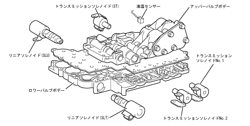

| Hydrollic control part |
| ● |
The valve bondy has been significantly reduced the number of components of components, such as eliminating gaskets on the upper and lower plates, as well as small and lightweight.In addition, all the solenoid valves were considered to be served as the Lower Valve Body side installation.
|
|  |
 Solenoid name and function Solenoid name and function
|